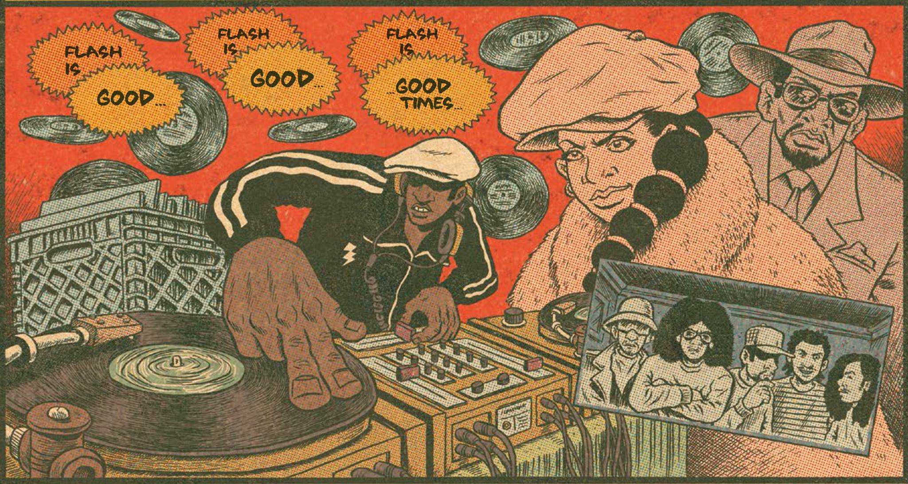
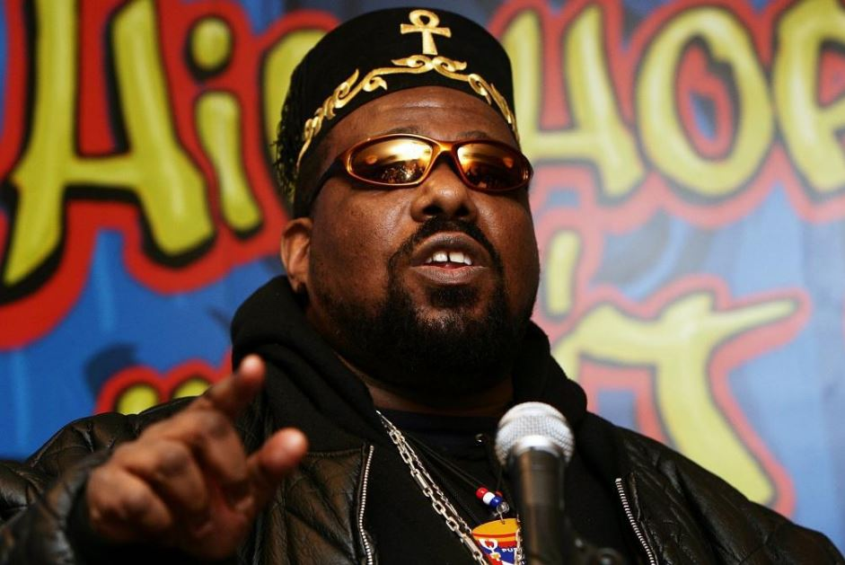

Mais que um gênero musical, o Hip Hop é uma cultura popular, surgida nas comunidades de origem africana, caribenha e latina localizadas nos subúrbios de Nova Iorque em meados da década de 1970.
Em um contexto de excessiva violência urbana e alta criminalidade, os jovens tinham apenas as ruas como forma possível de lazer. Assim, conseguiam se expressar nesse ambiente por meio da música, da dança e da pintura, manifestando e contestando a realidade em que viviam.
Neste cenário, em 1973, um DJ de 18 anos conhecido como DJ Kool Herc (Clive Campbell) tocou na festa de aniversário da sua irmã Cindy, utilizando apenas alguns trechos instrumentais de várias músicas, fazendo com que os convidados dançassem por muito mais tempo. Os segmentos de músicas escolhidos pelo DJ eram sempre acompanhados por letras feitas por um amigo seu, o MC. Surgia assim o Hip Hop.
No mesmo ano, no dia 12 de novembro de 1973, era fundada a ONG Zulu Nation, que buscava promover a cultura e o Hip Hop como o melhor caminho para manter os jovens afastados do crime e da violência presentes na rua.
De pouco em pouco, a parte lírica do Hip Hop, representada pelo rap, passou a ganhar espaço nas discotecas, muito comuns nos anos 1970 e 1980, que, até o momento, tocavam apenas os hits musicais de disco. Assim, duplas de DJ’s e MC’s começaram a conquistar seu espaço, competindo entre si nas batalhas de rap.
Um dos nomes mais importantes para a cultura do Hip Hop é o de Afrika Bambaataa, pseudônimo de Lance Taylor, um DJ do Bronx, líder da banda Zulu Nation, que deu origem à ONG citada. Apesar de não ser o primeiro a tocar o Hip Hop, Bambaataa foi o precursor na utilização do termo, sendo o responsável por prover as bases técnicas e artísticas para a expressão cultural que hoje conhecemos.
A ONG de Bambaataa promovia a inclusão dos jovens, oferecendo oportunidades por meio de palestras e aulas, nas quais eram trazidos conhecimentos gerais de matemática, economia, ciências, prevenção de doenças e outros. A ideia da Zulu Nation era mudar o pensamento violento e autodestrutivo das gangues que dominavam a Nova Iorque da época, apoiando a sabedoria, a compreensão, a justiça, a igualdade e a paz.
Para Bambaataa, os pilares da cultura do Hip Hop eram definidos por quatro pontos principais, sendo eles o DJ, o MC, o B-boy/breakdance (dança) e o Graffitti. Dessa maneira, o Hip Hop se tornava uma cultura inclusiva da qual todos poderiam participar, contribuindo com criatividade e arte.